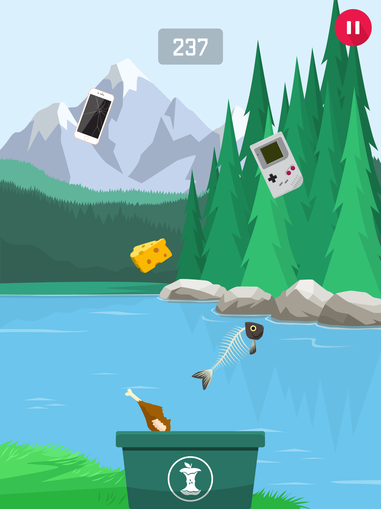
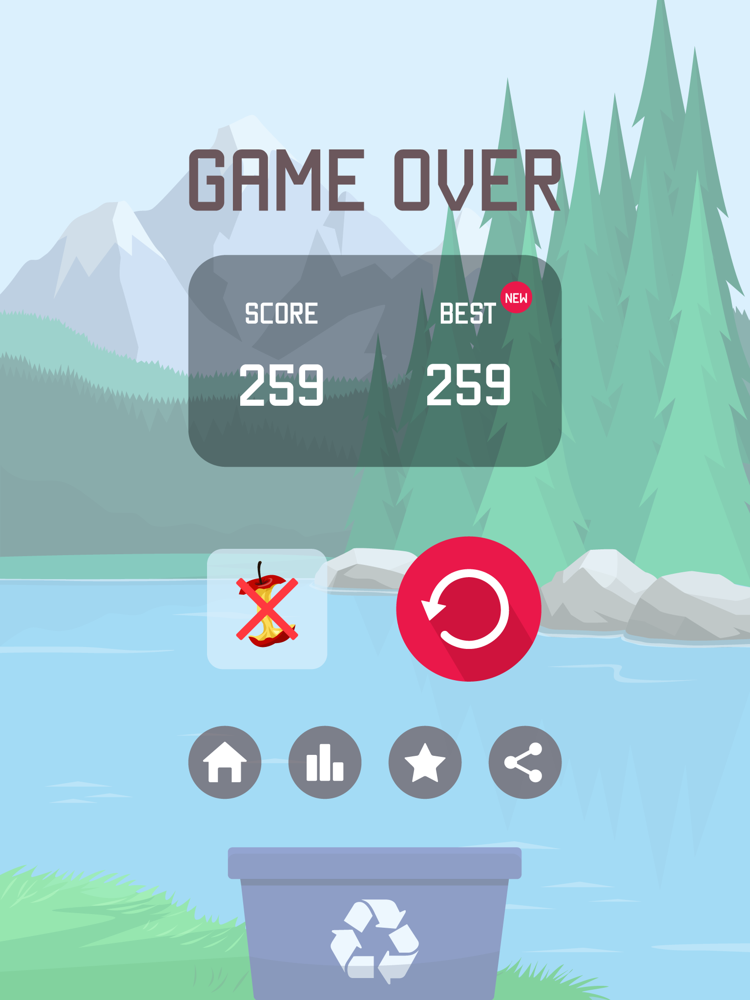
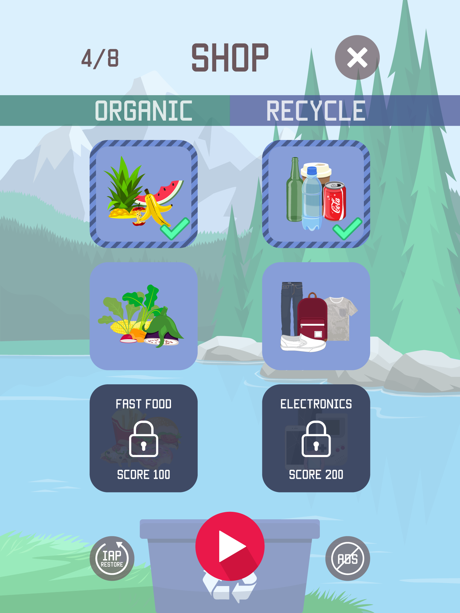
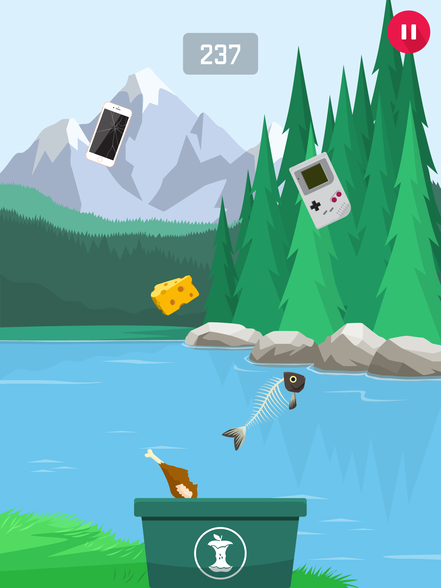
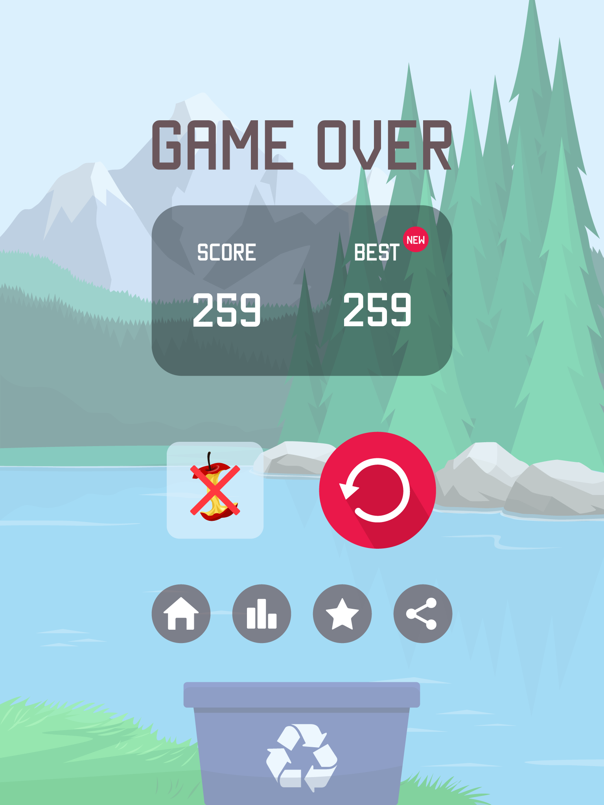
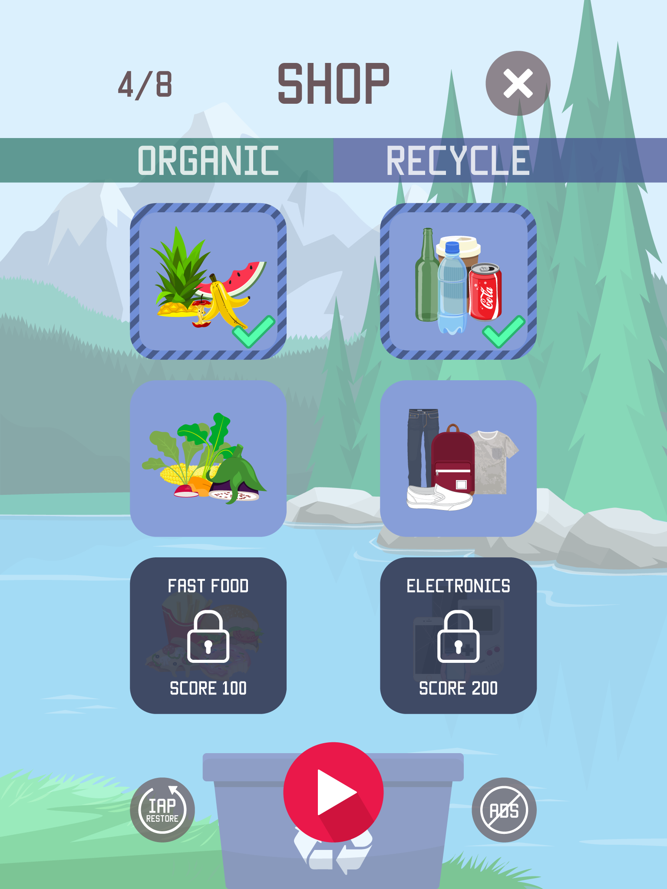

Garbage Frenzy is a casual arcade game for mobile devices. The gameplay is to sort out two types of garbage, organic and recyclable into the correct bin. The main interaction is to swap the bin by tapping the screen. The player needs to swap to the correct bin in time for the fallen garbage. If one garbage falls into the wrong bin, the game is over.
I created all the graphic components of this game, including the interface and illustrations, as well as the game trailer.
The initial concept of Garbage Frenzy was to be educational. However, in order to keep the game casual and simple, it was best to keep the garbage types to the mininum of two. For example, electronic devices should go into e-waste which would go into recycle in the game. As for shops, there are four sets of organics (fruits, crops, fast food and scraps) and four sets of recyclables (drinks, damn Daniel, electronics and retro) to unlock. The player is able to go to the shop to choose which sets to use before the game starts.
 





role: Game Graphic & Art Design
year: March 2015 - May 2016


annie.wang_@hotmail.com
Copyright © Annie Wang, 2016